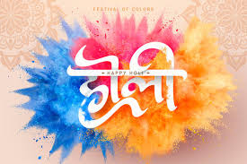

It's a two-day event: On the first day, families get together for a sacred bonfire. On the second day, the festival of colors is celebrated. First things first, use organic colour and gulaal, and steer away from synthetic colours to play Holi. As for skincare, start the day before by applying a thick layer of moisturiser. You can do so before going to sleep. Before heading out for the Holi celebrations, do not forget to moisturise your skin generously. Your clothes will be TOTALLY ruined, so do not wear fancy whites. You need a basic t-shirt, pants or a long dress that you either bin at the end of the day or wash knowing it will never be white-white again. Or better still, buy an inexpensive 'Kurta' (pyjama like pants + top) in India.
